Revista Digital de Estudios del Maquis
Publicado el 2 Enero 2011 por Salvador F. Cava
(Dedicado a Ginés García García, de Los Cojos, in memoriam)
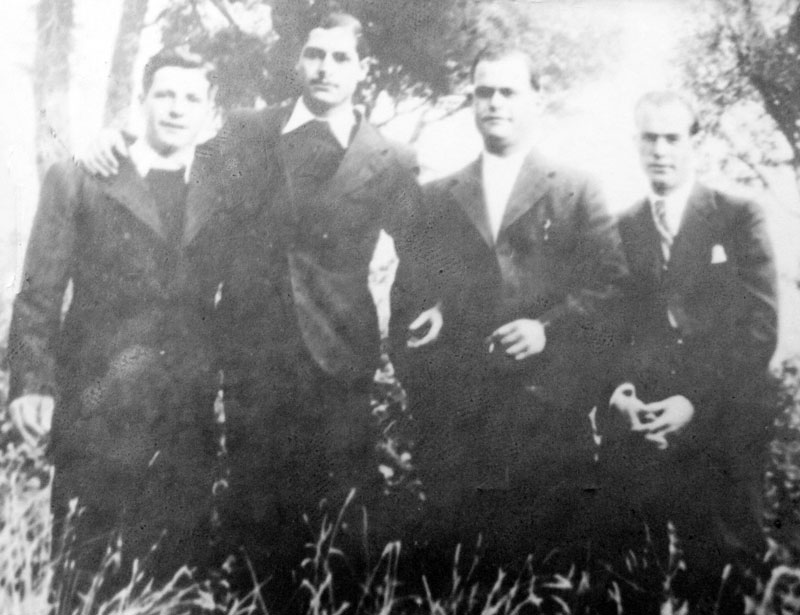
Emilio Cardona "Jalisco", el más alto del grupo.
El entorno de la aldea de Los Isidros (Requena), básico en el tránsito de personas y mercancías desde la planicie de viñedos de Requena hacia Albacete, o a la inversa, en su paso del río Cabriel por Villatoya, fue habilitado desde finales de 1945 por lo que al año siguiente sería la Agrupación Guerrillera de Levante. Hemos de imaginar, como ocurriese en tantas otras localidades, y como se reflejará en actuaciones de represión posteriores, que el tejido de la izquierda republicana de toda la comarca había sido durante diezmado tras la guerra y algunos de los condenados por el sambenito hipócrita de "auxilio a la rebelión" ya habían retornado a sus casas en los primeros años de la década de los años 40, y conocemos algún estudio histórico que se estaba realizando. Con todo, en 1947 y 1948, asistiremos a una nueva represión con cuantiosas detenciones. Entre este cuerpo humano de herencias políticas, pronto se contará con apoyos y enlaces en su caserío al igual que en otras aldeas próximas. Pero el hecho sustancial que de una manera histórica fija este espacio geográfico y humano como núcleo guerrillero por las fechas aludidas hay que situarlo en torno a una persona y a sus dos compañeros de actividad armada republicana durante la Guerra Civil, antifascista en la liberación de Francia y ahora antifranquista. Se trata de Emilio Cardona López ("Jalisco" y "Moreno"), natural de Campo Arcís (nacido en 1918, de oficio panadero, durante la guerra había sido sargento de la 146 Brigada en el 30 División; en Guerrilleros estuvo en la 11 Brigada), y de sus dos camaradas en los mismos frentes: Fulgencio Giménez Silvent (natural de Alicante, nacido en 1920, estudiante, fue teniente de Estado Mayor de la 35 División, en Guerrilleros participó en el Valle de Arán con la 471 Brigada; sus apodos en la AGL son los de "Prudencio", después de "Salvador" y por último "Rodolfo") y de Atilano Quintero Morales ("Tomás", natural de Pinar-Taibique (Isla del Hierro), 1913, se pasó a la zona republicana desde el frente del Este, en Huesca, incorporándose a la 35 División del 15 Cuerpo del Ejército del Ebro; tras haber sido internado en la cárcel de Perpignán y evadirse del campo de Vernet, coincidiría con Cristino García y el originario de Seu de Urgel, Bonifacio Quesada).
Pero los tres guerrilleros que a finales del otoño y principios del invierno en ese final de 1945 llegan hasta Campo Arcís no habían partido solos. En el grupo de "Jalisco", llamado II de Levante, ya estudiado en mi libro Los guerrilleros de Levante y Aragón y cuya misión era la de establecerse en el entono de Villena, también iba Donato Gallego López, (de Los Isidros, 1919, agricultor, soldado en la 100 Brigada de la 11 División, que actuó en el maquis de Savoir), detenido en Barcelona tras uno de tantos percances de suministros al entrar en España. La unidad la componían: Diego Vera Raja como Jefe de Grupo, y los guerrilleros Fulgencio Giménez Silvent, Emilio Cardona López, Vicente Pérez Varela, Marcos Martínez González y Donato Gallego. Habían pasado la frontera pirenaica el 17 de octubre.

Atilano Quintero Morales ("Tomás", natural de Pinar-Taibique (Isla del Hierro), 1913.

Fulgencio Giménez “Salvador”
Fulgencio Giménez Silvent (natural de Alicante, nacido en 1920, estudiante, fue teniente de Estado Mayor de la 35 División.
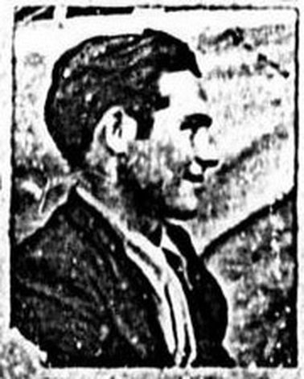
Donato Gallego López, que regentaba el molino de Los Isidros.
En su recorrido y dispersión coincidirían con el grupo de Atilano Quintero quedando reducidas las dos unidades a los tres componentes que llegarían a finales de 1945 a Campo Arcís. Y no por casualidad. Sería el propio “Jalisco” quien, ante la proximidad del invierno y faltos de orientaciones nuevas por la imprevista situación, les propusiese a sus dos acompañantes el estacionarse en el entorno de su aldea natal. Allí con la ayuda de su familia y a través de de un grupo de conocidos y amistades podrán capear los primeros momentos. Precisamente por ello, a lo largo de 1946, serán detenidos Marcelino García Prats, Antonio García Robledo, Marcelino González Escribano, Domingo Jiménez García, Juan José Jiménez Hidalgo y Agustín Robledo Cuéllar. Otra pléyade de detenciones tendría lugar a finales de 1948, entre ellas las de su familia, padre, madre y varios hermanos, y los labradores de la cercana masía del Moral.
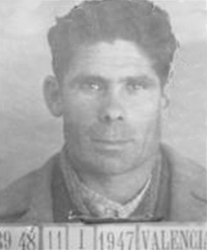
Antes de continuar con esta micro historia no podemos dejar por alto otra presencia guerrillera apenas aludida en libros, ni tan siquiera en el mío, y que es previa a lo que narramos. Me refiero a un grupo o batallón de 40 guerrilleros al mando del madrileño Isidoro Martínez, que pasaría la frontera francesa el 9 de octubre de 1944 dentro del operativo denominado Reconquista de España por el puerto de Benasque. Tan sólo ocho de ellos, tras los consiguientes enfrentamientos con el ejército, se adentrarían en el interior de España, de los que al poco dos se separan (Antonio Luque Serrano y Juan José Cruz Cruz, detenidos ambos el 20 de diciembre en Llanera de Ranes). Los otros seis componentes llegarían hasta Cofrentes, aunque antes, el día 22, se habían dejado ver en Andilla, en las Bodegas de Pardanchino, en casa de Daniel Domingo Veintimilla. En Cofrentes, como señalamos, en la Partida de los Robles, finca propiedad de la señora Visitación que era familia de la casa del oroque, en la casa de campo Malespardeñes, a las diez y media de la mañana del día 10 de enero tuvieron el último enfrentamiento con la guardia civil al mando del capitán Julián Bonilla, siendo detenidos cuatro de ellos (Nemesio Pla Pastor y su hijo Gastón Pla Pallarés, Cosme Caravaca González y José Camacho Mena). Los dos últimos, que lograron huir, Francisco Romeralo Serna, herido, y el jefe del grupo, Carrión Robles Dosal, lo serían tiempo más tarde. Romeraldo en Millares el mismo día 10 de enero, y Robles en Alcoy en el 29 de marzo de 1945. Se trata de un grupo semejante a los de “Capitán” y “Delicado”, pero que en este caso no se incorporaría a la estructura de la AGL. La denuncia de su presencia la había efectuado Julián “Malespardeñes” quien habitaba una casa próxima a la finca de Los Robles, al noroeste de Cofrentes, junto con otros hermanos. La comandancia por su favor le compraría un macho. Tiempo después, en el apogeo del AGLA, “Jalisco” junto con el marido de “La Madre” se personarían ante su puerta para ajusticiarlo, pero sería Paco Molina quien convenciese al guerrillero de Campo Arcís que desistiese de su idea por el compromiso familiar que le acarreaba.
Es seguro que su estancia en el entorno de Campo Arcís, “Jalisco” y sus dos compañeros la utilizarían para intentar contactar en Valencia con el Regional o el Provincial del PCE por estar fechas en proceso de reconstitución tras diversas caídas, pero con dos personas destacadas en su momentánea dirección, Celestino Uriarte y Jesús Izcaray, y también con “Luis” (Francisco Villares Carrasco), y Francisco Béjar Toro “Federico”; y a la vez buscarían enlaces en los diversos pueblos de la comarca de Requena, tanto en dirección o miras hacia el río Turia, como hacia el Cabriel. Así, y en un popurrí seguramente nada preciso deberíamos citar a gentes no sólo en Los Isidros, sino también en aldeas próximas como Los Cojos, Pontón, Casas de Moya, Casas de Pradas, Venta del Moro, Jaraguas, el propio Requena o más alejadas como La Pesquera, 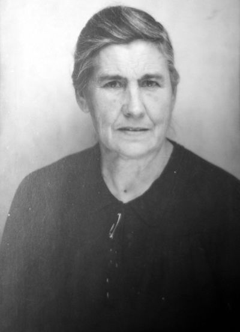donde se contará con los primeros enlaces. En mi libro de Los guerrilleros de Levante y Aragón se van citando los que 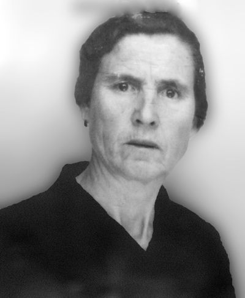en el proceso de investigación pude datar. Cierto es que habría algunos otros, y que el que no fuesen denunciados ni que se incorporasen a la guerrilla, sus nombres, dentro del tejido del mérito idealizado en la utopía y lucha por el retorno de la democracia y el fin de la época fascista, no han quedado inscritos en la historia. De quienes sabemos de su abnegación y compromiso son Félix Requena Pardo y Longinos Lozano García (Los Cojos), Luis Yeves Carrasco (Venta del Moro), de Crisanto Delgado Sisternas (Casas de Pradas), Tomás Navarro Navarro (Casas de Moya), de Victoriano Monleón Pérez (La Pesquera), de Ricardo López Martínez (Requena), además de puntos ya tanteados y establecidos al poco en Casa del Valiente, próxima a El Reatillo (el matrimonio formado por Bernardino Martínez Esteban y Bárbara Sánchez Martínez, y sus hijos, y también los residentes en dicha masía Francisco Navarro Tortajada y María Gómez Rozalén), o la Casa del Moral, en el término de Campo Arcís, (Emilio Valle Salinas, Hilaria Salinas Arona, Orencio Navarro Hernández, Manuel Navarro García, Candela García García y Josefina Navarro García), y los de allende del río Cabriel buscando las querencias por ahora de dos localidades muy significativas: Villamalea e Iniesta.
La relación de los guerrilleros con estos primeros enlaces, y en estos iniciales tiempos de 1946 era casi personal. Y además solía ser el jefe de la pequeña formación armada quien tomase las iniciativas de entrevistarse con ellos y encargarles las diversas misiones, generalmente informativas y de suministros de comida, ropa y calzado o hasta depositarios de los fondos con que contaban. En realidad ello es debido a la incipiente estructura que están creando, donde las relaciones con Valencia a través de la estación de El Rebollar es otra de sus bisectrices.
En los primeros meses de 1946, el grupo inicial de tres componentes, “Tomás”, “Prudencio” y “Jalisco”, ha ido aumentando con Basiliso Serrano “Fortuna” (y “Manco de la Pesquera”) que se suma en el mes de febrero, los hermanos de Los Isidros Marcelino y Mariano Fernández García, “Peñaranda” y “Canuto” respectivamente, que se unen en el mes de abril y con Manuel Montes Pardo “Flores” y Victoriano Soriano Villena “Salvador”. Todos ellos, en lo que fue un primer referente de estancia y de actuaciones casi incipientes, contra estraperlistas u otras fuentes de acción, por ejemplo los cuatro primeros habían asaltado al pagador de las obras del Pajazo en el mes de febrero, se hallan, adentrados en abril, en el paraje de Ginesitos, en la finca de Ganaciendas, donde acaecerá, el día 25, uno de los primeros hechos guerrilleros, explicado judicialmente y encausado bien entrado 1951 como mero acto particular de trasfondo económico, y por ende de forma errónea, de la que casi todos, tanto historiadores como familia, y gentes en general a fecha de hoy, hemos sido mal convencidos.
Hasta establecerse en las cuevas de Ginesitos, dentro de la finca Ganaciendas, a principios del mes de enero (donde reconociendo unas colmenas, declarará Félix Requena, se le presentaron como maquis, y desde esa fecha cada cuatro o cinco días estuvo suministrándoles), los tres iniciales guerrilleros habían pasado desde el entorno de Campo Arcís a Los Cojos. Precisamente en la cámara de la casa de Félix Requena habían estado escondidos cerca de un mes, y desde allí se trasladarían a Ginesitos. En estas decisiones, e incluso en sus contactos con los nuevos enlaces y hasta conocimiento de puntos de actuación como en El Pajazo o la incorporación de “Fortuna” desplazándose desde Ginesitos, es posible que tuviese una más que estrecha colaboración un vecino de Los Cojos, Pedro Lozano, dada su ocupación de vendedor de quincalla ambulante, como igualmente lo sería la de Crisanto Descalzo de Casas de Pradas con el negocio de las telas. En Ginesitos permanecerán al menos tres meses, hasta los trágicos sucesos del mes de abril.
Yo he narrado este episodio en mi libro Los Guerrilleros de Levante y Aragón, utilizando para ello los documentos del Sumario 17 del año 1946, incoado por el juzgado de Requena y fallado en Valencia el día 21 de mayo de 1951, e incorporado, en su parte de sentencia, al del “Manco de La Pesquera” (Sumarísimo 101-V-52, AJMV). En realidad, mi aceptación y trascripción de la narración judicial como fuente básica de lo ocurrido, a fecha de hoy y con nuevos datos conocidos, no fue la correcta, y en buena medida, tras percibirlo, redacté una breve fe de erratas en su momento, pidiendo disculpas a la familia afectada por la falta de una versión más fiel de lo acaecido. Éste es un peligro que se corre cuando se adentra uno en los temas de lucha armada, de conflicto social y político, y que al nominalizarlos, pues es lo justo, y al no estar al alcance público de los investigadores todos los documentos, repito todos, y de una manera adecuada, se puede caer en el error o la imprecisión, que no en el desafecto, y desde luego nunca en una reescritura con fines espurios. Mi culpa como historiador, y disculpa no es ajena. Lo he dicho y me reafirmo. Sobre este suceso a fecha de hoy, tras muchas investigaciones sesenta años después, no hay nadie que sepa más que yo. Y todo lo que sé aquí queda explicado.
Como bien sabemos la historia muestra múltiples caras, todas ellas válidas para la construcción de la historicidad. Una es la de lo ocurrido, otra la de lo juzgado y la tercera la de lo sabido. En esto último estamos, y lo hacemos como proceso de reconocimiento histórico. Sin otro fin que el de la memoria y sus referentes.
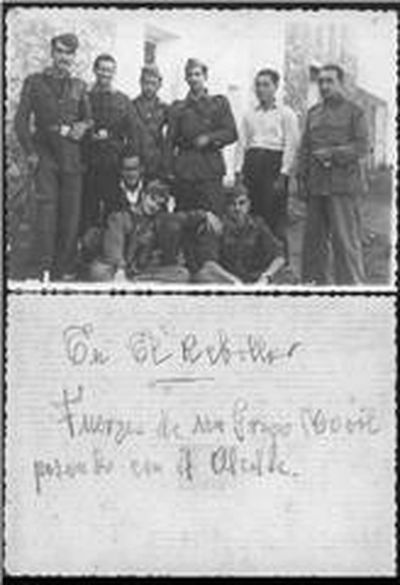Lo acaecido debió ser como sigue. En la aldea de Los Cojos los guerrilleros contaban con tres enlaces destacados ya a inicios de 1945 (Félix Requena, Pedro Lozano y Longinos Lozano). Así, es más que posible que por medio de alguno de ellos eligiesen las cuevas en Ginesitos para establecerse. Pero poco antes, y viene al caso, un vecino de Los Cojos, hermano de Pedro Lozano, recogió en una viña donde había ido a trabajar a un hombre muy “cansado”. El motivo de su deterioro físico no era otro que el de que venía huyendo de la Guardia Civil que lo perseguía. Su aspecto era bastante lamentable, le dieron de comer, curaron las heridas de los pies, cortaron el pelo, afeitaron (en este caso Juan Sanz Lozano), pues por esas fechas hacía en Los Cojos de barbero dado que residía en dicha aldea al estar casado con una vecina de allí, Victoria Lozano García. Como decimos, se le prestó ayuda, y poco antes de ser localizado con el fin de ser detenido por los guardias, ese mismo día por la tarde, pudo escapar de la casa a una calle sin salida. Sin embargo, gracias a la tía Ignorata, utilizando una puerta de su horno de pan, se le abrió paso con salida hacia el campo. En su huida, al cruzar por el camino de la fuente, un señor que vivía en la masía la Casa de la Huerta, Luciano Descalzo, y que bajaba a la aldea de Los Cojos a por agua con una caballería, se tropezó con él. El rentero, habitualmente, tras llenar los cántaros aprovechaba para ir a la tienda de la aldea, que regentaba Longinos Lozano, a comprar comestibles. Y así, en esta ocasión, una vez ya en las callejuelas de pueblo comenzó a gritar: “¿Hay escopetas para cazar?”
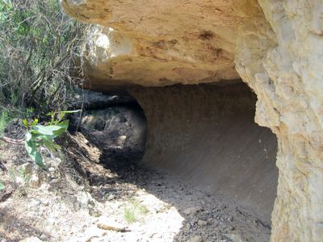
Campamento principal, Cueva de Ginesitos
El suceso hubiese quedado simplemente en nada, pues el huido no fue detenido y tampoco conocemos su nombre, pero esta circunstancia aparentemente inconexa con la guerrilla, sin embargo nos aporta el detalle de la escopeta que se utilizará para herir en un encostado y en la pierna a Roberto Martínez Nuévalos. Precisamente cuando los guerrilleros se establezcan en los primeros meses de 1946 en Ginesitos, alternando su estancia o simplemente dividiéndose en dos cuevas situadas una a cada lado del barranco y muy buen camufladas por el matorral, sabrán, seguramente por sus enlaces, del hecho acaecido y la actuación del rentero citado, y por ello una de sus primeras acciones será la de personarse en la masía y echarle en cara a su propietario el trato y la denuncia de aquel perseguido por los guardias, al tiempo que se llevaban su escopeta, con cartuchos, algo de comida y se supone que también dinero. Y con esto ya tenemos identificada la escopeta con la que inicialmente se le disparó e hirió en costado y muslo a Nuévalos, y que no fue por tanto ni la del guarda de Ganaciendas, ni la que se hallase en casa del suegro de Juan José Ruiz. Dato hasta ahora nuevo en toda esta reconstrucción histórica.
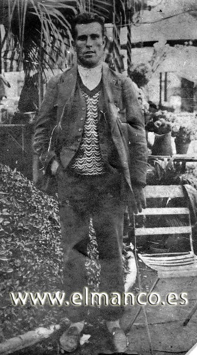
En Ginesitos, donde se hallaban los guerrilleros, el campamento en esta ocasión estaba situado en dos cuevas próximas al río Cabriel, no excesivamente alejadas de los pueblos de Los Isidros y Los Cojos. Lo cierto es que por estas fechas y en estos parajes, los refugios naturales son los lugares más idóneos para ubicar los campamentos. “Tomás” había convocado a varios de sus enlaces para, entre otras cosas, celebrar su onomástica, aunque es posible que la cita tuviese un sentido más rutinario en el día a día guerrillero: suministros, información, nuevas tareas. Pocos días antes, el 21, recordemos, se había incorporado, tras servir como punto de apoyo y de recogida de los guerrilleros en la casa de su suegro, “Canuto”. Al tiempo de la llegada del primero de los enlaces, Félix Requena Pardo, según declarará el “Manco de La Pesquera”, se produjeron los hechos que ocasionasen la muerte del vecino de Los Isidros, Roberto Martínez Nuévalos, casado e hijo del posadero Saturnino Martínez. Sería poco antes de las 10 de la mañana del día 25 de abril. “Tomás”, que es posible que hubiese salido al encuentro de Félix Requena, se toparía con Nuévalos, unos trescientos metros más abajo del lugar donde tenían la base. Hablando con él, e interrogándole por su presencia en la zona, aparecería inesperadamente Félix Requena. La primera reacción de “Tomás” fue la de echar a Requena de allí airadamente, aparentando que no le conocía, pero al mismo tiempo se percató que los dos hombres, uno de Los Isidros y el otro de Los Cojos, se habían identificado. Es por ello que “Tomás”, entonces, se aproximó a donde estaba Requena para preguntarle si conocía a Nuévalos y qué clase de persona era. Y éste fue el momento en el que Nuévalos, a una distancia de unos 30 metros, intentó huir. La excusa de Nuévalos ante “Tomas” para justificar su presencia había sido la de que estaba recogiendo esparto.
Precisamente este hilo, el del esparto, fue el que llevó posteriormente a la GC y al juez instructor a encausar principalmente, no a Félix Requena, sino a uno de los propietarios del arrendamiento de tales aprovechamientos, a Juan José Ruiz. Y en menor medida a sus otros dos socios y parte de la familia del primero. Aunque el especial empecinamiento en encausar a Ruiz Pardo, cuando la propia GC ya estaba al tanto de la presencia de los guerrilleros en Ginesitos, y hasta tenía una versión muy cercana a lo acontecido con las declaraciones del propio Félix Requena, que también les acompañaría al lugar de los hechos y hasta les indicaría la posición de los campamentos, todo ello señalado con grandes marcas de pintura blanca todavía en la actualidad visibles, pudiera ser que escondiese otros fines que sólo, como teoría, a lo largo de este relato también expondremos. Pero continuando con lo anterior, y más que con mis palabras, quisiera citar las declaradas por el propio “Manco de La Pesquera” en 1952, tras su detención, y cuando le pregunten el día 7 de mayo, en una de sus múltiples indagatorias, por este caso, que aclaran lo sucedido y que, lamentablemente, no sirvieron para cerrar las investigaciones sumariales y declarar inocente de las imputaciones recaídas sobre Juan José Ruiz, pues en ese fecha su juicio por estos motivos ya estaba fallado y había cumplido buena parte de la condena impuesta.
El esparto era uno de los pocos bienes libres de monte aprovechable a lo largo de la primavera. Crece en zonas de monte bajo y meridional, y las fincas de estos términos lo utilizan para confeccionar múltiples aperos relacionados con la vida del campo. Por estas fechas en Los Isidros había al menos un punto de compra del mismo. Precisamente el propietario de la finca Ganaciendas, Lucio Gil Fagoaga (Zagoaga, Taboada y hasta Fafoaga se escribe su segundo apellido), que residía en Madrid, lo había vendido a Juan José Ruiz, a Justo Cuéllar Alcocer y Juan Gómez “Juanito”, solidariamente, a principios de año. Y si bien es cierto que algunos vecinos a su vez le habían recomprado parte de sus derechos a Juan José Ruiz, según declararán en sumario, como por ejemplo el propio Félix Requena, el del perímetro próximo a donde se hallaban las cuevas guerrilleras, con otros había tenido serios enfrentamientos verbales al sorprenderles cogiéndolo sin permiso, como con Fermín Gallego Descalzo, quien le dirá que no lo guarde tanto, que ya se lo guardan los maquis; con Demetrio Soriano García o Servando Mislata Pardo. Por estas fechas la finca tenía contratado a un guarda, Teodoro López Soto. Precisamente el día de la muerte de Nuévalos todo el mundo, por decirlo así, había salido a recoger esparto. Incluso los propios guerrilleros habían cortado el que rodeaba el campamento, recomprado como decimos por Félix Requena, para de esta manera evitar que alguien, incluso el propio guarda, se acercase hasta su base. Por lo tanto no sería de recibo justificar que se estaba en esa zona, en concreto, en esos menesteres, pues cualquiera podía ver y comprobar con sus propios ojos que allí ya se había segado. Y tampoco parece que fuese lo habitual ir a cortarlo sin acompañamiento de alguna humilde caballería. No parece causa suficiente, por tanto, el mero delito o disgusto de recoger esparto sin más y sin autorización, para terminar inculpando de una muerte a alguien.
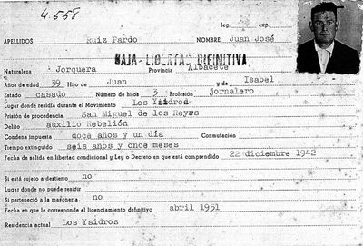 |
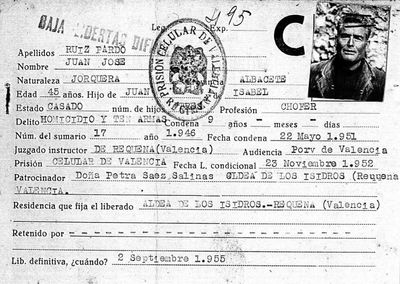 |
|
|
Fichas de la Prisión Celular, de Juan José Ruiz Pardo |
|
Juan José Ruiz Pardo “Rojo”, el encausado y condenado por la muerte de Nuévalos, había nacido el 15 de octubre de 1906 en Jorquera (Albacete). Estaba casado con la natural de Los Isidros Crispina Rodríguez Sáez, con 3 hijos en 1939 (José, Isabel y Marcial, con siete años de diferencia entre el mayor y el menor) más tarde nacería Juan Luis) y de oficio chófer. Tras la guerra civil había sufrido la condena de 30 años por el injusto e ilegal término de “auxilio a la rebelión”. San Miguel de los Reyes fue una de sus cárceles más permanentes tras ser conducido desde la de Requena a la Celular de Valencia el 8 de diciembre de 1939. Tras conmutársele la pena saldría en libertad condicional sin ninguna contraindicación de destierro en Los Isidros el 20 de diciembre de 1942. El día de los hechos él y su mujer Crispina Rodríguez también habían salido a recoger esparto, con su burra, hacia la zona de la Madronera, unos dos kilómetros distantes de Ginesitos. No oyeron los disparos y en el trayecto, por la carretera entre Casas Ibáñez y Requena, entre los kilómetros 28 y 26, donde se ubica lo sucedido, vieron a dos chicos (se trataba de Eugenio Pérez Pérez y Juan Martínez Soriano) a quienes Ruiz Pardo no reconoció (y que declararán que delante de ellos iba la víctima y detrás el matrimonio Ruiz), a Bruno Rodríguez, la camioneta de Antonio Cárcel y a Eloy Haya Laguna. Sobre las 16.30 ya estaban de vuelta en casa.
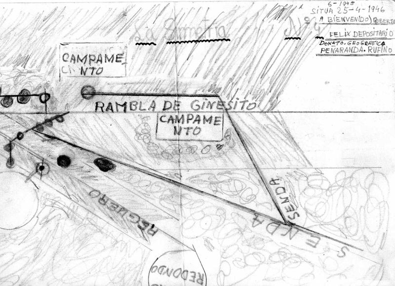
Testimonio importante de lo acaecido en Ginesitos el día 25 de abril, sólo conocido en 1952, es el de Basiliso Serrano “Fortuna”, allí presente, ya aludido, quien declarará que: “el día a que se refiere la pregunta todos estaban disgregados por las alturas a excepción del “Tomás” y del “Jalisco” que habían bajado al barranco a entrevistarse con el enlace Félix Requena Pardo; que sobre las nueve o nueve y media a diez de la mañana, sin que pueda precisar la hora, el indagado oyó tiroteo, muchos tiros de pistola y extrañado de ello, viendo que no le avisaban, una hora después de terminar el tiroteo, bajó hacia el barranco, encontrándose allí el llamado “Salvador” o sea el llamado Victoriano Soriano Villena, y el enlace Félix Requena Pardo, a los que preguntó que qué era lo que pasaba, contestándole el Félix Requena Pardo, que habían matado un hombre, y al preguntar el indagado por qué motivos, le contestó el Félix Requena Pardo, que el muerto andaba merodeando por allí y según le había dicho el “Tomás” al ser interrogado habiendo deducido que era mala ficha y como en el interrogatorio había intentado huir corriendo habían disparado sobre él matándolo, que esta es la versión que el Victoriano Soriano Villena “Salvador” y el Félix Requena Pardo le dieron sobre el asunto por el que se le pregunta pero posteriormente al comentar el caso con sus demás compañeros supo que el motivo de haber sido muerto el expresado sujeto fue que el Félix Requena Pardo, le dijo al “Cubano”, o sea al jefe de las partidas que sería conveniente ajusticiarlo porque se trataba de una mala ficha y como les había visto con ellos es decir con la partida seguramente lo denunciaría y sería detenido” (Sumarísimo 101-V-52, AJMV). En el resto del relato de “Fortuna” se describe el trágico desenlace señalando a “Flores” como el que le golpearía la cabeza con una piedra, tras no hallar el cadáver en el sitio que les había indicado “Tomás”, encargándoles la misión de enterrarlo, (nuestro informante señala en esa acción a “Bienvenido”, pero por esas fechas, según nuestros datos, el hermano de “Jalisco” estaba cumpliendo el servicio militar). “A “Tomás” no le gustaban las chapuzas”, son palabras de “Canuto” que nos recordó en varias ocasiones Ginés García, su cuñado. Y por eso, en la reunión de todo el grupo en la cueva que aparece en estas páginas, se realizó una severa crítica de lo sucedido y se decidió abandonar inmediatamente la zona pues más pronto que tarde se localizaría el cadáver y se personaría la Guardia Civil. Como así fue. Todavía, pasados más de cincuenta años, como señalamos, son muy visibles unas grandes marcas de pintura blanca indicando el camino y la ubicación de los campamentos, como asimismo existen restos de algún parapeto de piedras que se utilizaría como espacio de vigilancia por los guardias o los somatenes, desde donde se divisa una panorámica del terreno realmente, desde el punto de vista del paisaje, espectacular y digna de museización.
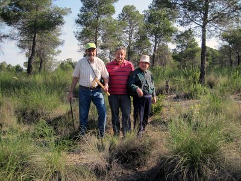
Y los hechos se sucedieron tal que así, pero podemos añadir más detalles sumamente esclarecedores, que en modo alguno aparecen en las diligencias, y que por no ser conocidos sin duda influyeron en la condena de “El Rojo” como causante de la muerte, cuando en realidad fue tal como contaría “El Manco” y hasta también relataría, en el mismo sumario y ya en 1946, Félix Requena. Pero lamentablemente, la declaración de este enlace no fue la aceptada por el tribunal, que aunque señalara que los guerrilleros le habían dicho que “El Rubio” estaba por allí, él nunca lo vio, y sí la versión que por esas fechas tuvo la GC tomada de las declaraciones de Juan Sanz Lozano, uno de los componentes del grupo del “Mejicano”, detenido en 1947, quien relató la versión que a su vez le había contado “Flores” durante su coincidencia en el campamento de Hortunas, según la cual, además de los citados, en Ginesitos también estaría Ruiz Pardo y éste sería quien dispararía. Asimismo la inspección ocular, y no en menor medida el origen ideológico de Juan José Ruiz y hasta del alcance económico en torno al esparto que como perjudicado le ocasionaba, contribuirán en los considerandos judiciales.
A fecha de hoy desconocemos el motivo real que condujo a Martínez Nuévalos al paraje de Ginesitos dicho día. No parece muy creíble, como ya apuntamos, la teoría de que estaba cogiendo esparto, aunque así fuese. Tampoco, como se pudiera suponer, que era enlace de la guerrilla. Lo bien cierto es que se sabía que los guerrilleros acampaban por esos parajes. De hecho algún vecino le llegaría a comentar a Ruiz que a él le cogían el esparto los guerrilleros, como hemos aludido. No nos atrevemos a teorizar, con certeza, la presencia de Nuévalos en esta zona con los primeros movimientos que ya se estaban dando para precisar la ubicación de los guerrilleros, informar a la GC de la misma y hasta crear un primer grupo de contrapartidas, inicialmente semejante a un formación guerrillera, como será el que se organice al poco con jóvenes naturales precisamente de Los Isidros y de Villalpardo, y capitaneados por un desconocido “Mejicano”, en cuya historia, según nos cuentan informaciones orales, tuvo algo que ver la autoridad omnímoda del natural de Los Isidros, Rufino Martínez López, sobrino de la viuda Robustiana, y por ende primo de Donato Gallego López, que regentaba el molino y también compraba el esparto, quien según nuestras noticias antes de la guerra había estudiado para sacerdote, y hasta es posible que estuviese a punto de ser ordenado, y que se pasaría del bando republicano al nacional.
Volviendo a Roberto Martínez Nuévalos, al menos en tres ocasiones ya lo habían visto los guerrilleros merodear por los alrededores de su campamento. Previa a la del día de autos había estado en una de ellas acompañado por un sidecar y recogido a la vuelta por el mismo. Ese día, sin embargo, había sido sorprendido merodeando por la zona, como atestigua “El Manco” y también Félix Requena, por “Tomás”, y parece ser que por “Salvador”. Requena poco antes había estado suministrándoles pan, cosa que venía haciendo entre otros menesteres desde enero, aunque el tema del pan, dado su control, nos llevaría a pensar en otra ruta desde Casas de Pradas. Precisamente tras dejar la comida Requena se había dirigido al encuentro de “Tomás”, y es en este momento cuando, sin llegar a hablarse ni a saludarse, Nuévalos y Requena se vieron las caras y reconocieron a una distancia no muy lejana, en la caída de la pendiente sobre la que se encuentra el campamento principal de Ginesitos. Dudo mucho que Requena le pidiera a “Tomás” una acción represiva inmediata, antes bien, “Tomás” intentó saber con más certeza la razón de Nuévalos de estar por allí. Precisamente al ir a confirmar su versión con Requena sería el momento en el que Nuévalos intentaría huir y al percatarse de ello, en ese mismo instante, “Tomás” le dispararía con aquella escopeta ya citada (y que en las indagaciones nunca saldría a relucir). El final, ya interno, y de la guerrilla, de la muerte de Nuévalos está recogido por la versión de “El Manco”. Tal vez aquí tendríamos que añadir que el cuerpo fue trasladado por varios guerrilleros a una prudente distancia más alejada del punto donde acaeció su muerte para evitar que su campamento fuese localizado, por lo demás medida casi innecesaria pues los maquis abandonarían su base de inmediato.
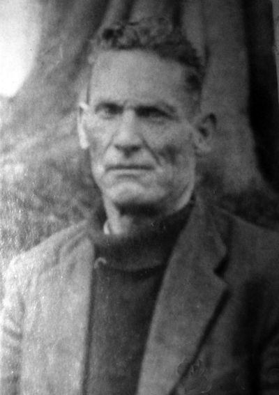Como decimos el cuerpo fue abandonado en el paraje de Fuente Colgada (del término de Venta del Moro), en el centro del arroyo de aguas pluviales. La GC investigó el caso desde el momento que sucediese y tras que el día 27 de abril se encontrase el cuerpo de Roberto Martínez. Las culpas, seguramente uniendo los datos en nada conclusivos, pero que funcionaron como represión contra el tejido de izquierdas, llevaron a la justicia franquista a señalar a Juan José Ruiz, y parte de su familia que serían acusados como responsables del hecho. Los dos datos a los que aludo no eran otros sino que ya había sido condenado tras la guerra, y que era el propietario de los derechos del esparto y esto último le había causado más de un disgusto con algún vecino. Esta fue la simple lógica inicial pues el tratamiento de la investigación siguió el cauce de un posible homicidio por causas económicas, simplemente para impedir que se siguiese robando más esparto. Y el proceso parecía lógico habida cuenta que no había amenazas por parte de la guerrilla contra Roberto Martínez y tampoco se dejó, y a ser precisos en estos tiempos de pre-Agrupación aún no se solía dejar, una nota política señalando la autoría guerrillera de la muerte. Y, por lo que se aprecia en el proceso de investigación inicial, tampoco se remarca de manera llamativa la constancia de la presencia del maquis en dichos parajes de Ganaciendas, aunque se sepa y se cite.
Sobre esta lógica inicial se detendría a todos los propietarios de los derechos del esparto adquiridos al profesor madrileño, oriundo de Requena, Lucio Gil Fagoaga. Y también, poco a poco, a todos aquellos que han visto o colaborado con los guerrilleros, los maquis. El cuartel de Los Isidros empezaría a llenarse. Por este motivo también sería encausado, en el sumarísimo 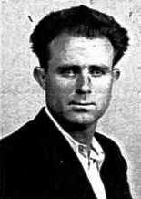550-V-46 tanto Juan José Ruiz, como su esposa Crispina Rodríguez Sáez, su cuñado Manuel Rodríguez Sáez, su suegro Justo Rodríguez Salinas, Faustino Lozano Descalzo, Justo Cuéllar Alcocer, Juan (Juanico) Gómez y Fermín Gallego Descalzo. En sus propias declaraciones Juan José Ruiz había reconocido que la única vez que había visto a los guerrilleros había sido el día 10 de marzo, que le habían salido a él y a Justo Cuéllar cuando estaban inspeccionando o vigilando que nadie les robase el esparto. Posteriormente y tras duros interrogatorios y registros, costumbre represiva de la época y aún mantenida viva en las memorias y recuerdos familiares, se utilizaría otra de las lógicas represivas, los antecedentes penales, y si además en el registro de las viviendas se hallaban armas de fuego, como escopetas y pistolas, todo iba cuadrando según la lógica prevista por la investigación, que no por la razón o las del rechazo de su implicación por parte de los acusados. Varios de ellos al poco tiempo quedaron en libertad condicional a la espera de juicio. Este proceso de investigación casi a regla ya lo he recogido en mi libro, y allí copiaba textualmente las palabras de acusación en su apartado de “hechos probados”, y ante los abogados de ambas partes, pues este no fue en juicio militar sino civil.
El proceso, que sentenciará el juez Fernando Candel González, el día 22 de mayo de 1951, en Valencia, se había iniciado con la detención de Ruiz Pardo, de 44 años, el día 29 de abril de 1946 hasta el 25 de marzo de 1950 (el 4 de septiembre de 1946 lo trasladarían a la Provincial de Valencia desde Requena), y desde el 11 de agosto hasta la libertad condicional, el 23 de noviembre de 1952. La sentencia condenatoria unirá dos acusaciones la de homicidio y la de tenencia de armas. Por la primera será condenado a siete años y a dos por la segunda. Por la otra causa de colaboración con la guerrilla sería condenado a dos años y Justo Cuéllar a seis meses, el resto de encausados en el sumarísimo 550-V-46 sería absuelto. En la investigación, obrarán bastantes declaraciones que se ciñen sucintamente de una manera o de otra a lo previsto por el juzgado, por la guardia civil y que hemos ido desgranando en líneas anteriores. De los testigos a favor y en contra, y tampoco se trata ahora de remover historias, sino de describir una realidad ya pasada, se perciben cuestiones sobre si lo han visto o no el día de los sucesos, y dónde, en las declaraciones de Carmen Gómez López, Josefa Gómez López, Eloy Haya Laguna, Jaime Ruiz Pardo, Luciano Navarro Descalzo, Juan Robledo Cuéllar, Bruno Rodríguez Cárcel y Guadalupe García García. Hay apreciaciones subjetivas y comentarios de los vecinos: Servando Mislata Pardo, Agustín Olmos Cardona, Rufino Martínez López o la esposa de Roberto Martínez Nuévalos, Milagros García Carrión. Y se centran en el tema de las armas encontradas en casa de su suegro, también encausado por este motivo, Justo Rodríguez Salinas, de 76 años, preso desde el 24 de mayo al 5 de agosto, y en el suya propia, de Inés Rodríguez Sáez, Jesús García Martínez, Petra Sáez Salinas y Severiano Cárcel González.
Como apuntamos, también jugaron en su contra las apreciaciones de revisión ocular del terreno y el que le encontraran armas semejantes, aunque los técnicos nunca certificaron que se llegasen a disparar, a las utilizadas en la muerte de Nuévalos. Había huellas de dos personas, una mayor y otra más joven o de menor corpulencia, datos que la GC relacionó con él y con su mujer, y había restos y huellas del pelo de una burra que se había revolcado en una carbonera, semejante a la de Ruiz, y un fragmento de tela de cuadros. Pero estos datos oculares nos llevan de la mano a una circunstancia que ya anticipé y que hasta ahora me resultaba desconocida, y desde luego no se cita en ningún documento ni libro. En el momento de la muerte de Nuévalos, si no en el lugar de los hechos sí muy próximos al mismo había otras dos personas, naturales de Los Cojos, que también habían ido a coger esparto ese día. Se trataba de un padre y de un hijo (de ahí sus huellas, y no las de Ruiz y su mujer), y que también habían llevado una borriquilla semejante a la de Ruiz. 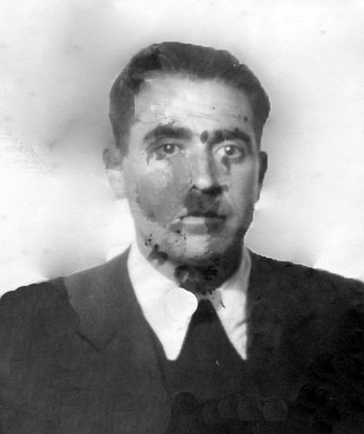Eran Ricardo García Descalzo y su hijo Daniel García García. El padre había dejado al hijo a cargo de la borriquilla mientras él recogía esparto, justamente en el espacio circular y sin vegetación de una carbonera, en la loma de la rambla coincidente con la de Ginesitos. En ese momento fue cuando se oyeron los disparos. Ellos no los presenciaron, pero el hijo sí que vio cómo cuatro guerrilleros transportaban al muerto hasta cerca del lugar donde estaba custodiando a la modesta caballería, en tanto que un quinto recorría la loma que separa ambas ramblas en misión de vigilancia. Sería este guerrillero quien descubriese al chiquillo y le ordenase que se marchara volando. Entre otras valoraciones el padre era el suegro de uno de los recién incorporados al monte y a esa unidad, de “Canuto”. El chiquillo obedeció al guerrillero, escondiéndose en una mata de pinar cercano con más que miedo en su cuerpo. El padre, ya sin los guerrilleros a la vista, no tardaría en regresar asustado por los disparos y llamando a gritos a su hijo. Al no aparecer, se temió lo peor. Lo buscó por las cercanías, pero lo que llegó a ver fue el cuerpo de Nuévalos depositado por los guerrilleros en un entrante de esta nueva rambla. La impresión fue tremenda, pero al tiempo le supuso una cierta tranquilidad, no se trataba de su hijo. Y así, cuando al rato se reencontró con él en la carbonera, entonces recuperó la inquitante calma. Rápidamente los dos vecinos de Los Cojos se volvieron a la aldea. El tema era más que delicado. Las indagaciones y detenciones se llevarían a cabo de forma inmediata. El cuartel de Los Isidros se iría llenando de gente detenida. Algunos pasarían a la cárcel, a otros se les dejaría en libertad. Fue la esposa de Ricardo García, de carácter e inteligencia natural sorprendentes, la que halló la solución para que su marido no se viese implicado, aún así tuvo que pasar una noche en el cuartel. Ideó que se hallaba enfermo, lo cual era cierto a causa de la impresión de lo sucedido, y por tal motivo se metió en la cama. Para su curación, indicando que llevaba así unos cuantos días, recurrió a la ayuda de una mujer del pueblo muy significada en el ámbito de lo que se llamaría la derecha local, con oficios también de curandera, la señora Juliana, y por ello cuando lo detuvieron para saber dónde había pasado el día de la muerte de Nuévalos, pudo decir que estaba en la cama desde hacía varios días, y la señora Juliana podía confirmarlo, como así fue. Y, que yo sepa, hasta el día de hoy, no se conocía este nuevo testimonio, que aquí ofrecemos gracias a su narración por un familiar directo.
Con todo, Los Isidros y su entono siguieron siendo un punto importante de ayuda a la guerrilla. La familia Sanz Lozano, Casimiro, Basilio y Juan, estos dos últimos unidos a la partida independiente de un singular personaje como fue el apodado “Mejicano”. El hecho más destacado, y ya lo hemos narrado, creo que esta vez con más acierto, fue el intento de toma del pueblo el día 6 de septiembre. No fue todavía cuando empezaron en masa las detenciones. La lógica, errónea, como hemos visto, de inculpación por la muerte de Nuévalos, no llevó a la GC a ubicar en la acción a la guerrilla. Es por ello que habría que esperar a nuevos hechos y actividad ya más claros en la misma zona para que esto se produjese. Mientras tanto sí que parece que algunos 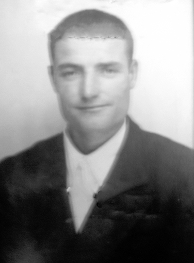movimientos empezaban a otearse. Ya hemos visto entre ellos la incorporación de los hermanos Fernández García al grupo guerrillero. Como también aludimos a la llegada de Donato Gallego a Los Isidros. Pero por lo pronto habrá que esperar hasta bien entrado el verano para que de nuevo se reactive la presencia guerrillera. Durante este tiempo los guerrilleros empezarán a crear una estructura más amplia, a relacionarse con Valencia, a cimentar la propia organización, AGL, y a establecer sus líneas más políticas y militares de actividades de insurgencia. Así aun cuando uno de los enlaces más destacados de Los Cojos, Longinos Lozano García, en sus breves memorias que circulan impresas (Vicente Argilés Gómez y Vicente Sáez López: De vuelta por el mundo de Requena. La Albosa requenense, págs. 300-331) cita el día 2 de agosto de 1946 como el de su detención y el 3 como el de su huida del cuartel de Los Isidros, las detenciones que dieron pie a proceso judicial y cárcel se llevaron 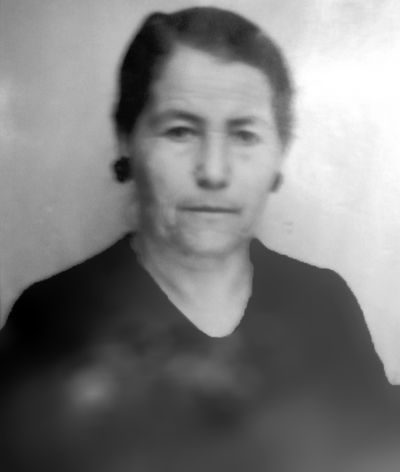a cabo en el mes de septiembre. En las breves líneas que Longinos dedica a su actividad relacionada con la guerrilla y su detención y huida del cuartel de Los Isidros, como decimos, además de referirse al día, también comenta hechos sin duda verídicos, como que en el momento de su arresto se hallaba trillando en las eras junto con su madre, su hermano y su cuñada, lo cual certificaría la fecha de agosto, que por el camino se cruzó con otra vecina, María Trujillo, que su hermana le llevó la cena y que sólo pasó una noche en el cuartel, que allí coincidió con otros detenidos como Félix Requena, su esposa (Marina Salinas Fuertes, que volvería a ser detenida .junto con su hijo Juan Requena y con la natural de Casas de Pradas Julia García Marzal, a mitad de septiembre de 1949), Eugenio Mislata y Justo, todos ellos de Los Cojos, que el día 13 lo dejaron sólo en la sala de las “torturas”, o sea “el recibidor”, le llama él, que tenia una pequeña ventana, y cogiendo una silla que había detrás de la puerta de la habitación pudo escaparse. Su madre y sus dos hermanos serían detenidos y uno de ellos, Manuel Lozano, sufriría verdaderas torturas en el cuartel, lo que nos serviría de reflejo de lo que pasaría con otros detenidos. Seguramente todo ocurrió como señala Longinos, pero su huida y no incorporación al monte, o incluso la ausencia en sus memorias de referencias más explícitas a su ayuda al maquis, que la hubo, pues en los textos de la propia guerrilla se confirma, nos indican que toda la verdad no se encuentra en su escrito biográfico. Que es posible que la circunstancia de dejarlo solo estuviera, tal vez estuviera, mediatizada por algún tipo de relación familiar entre el jefe del puesto y su propia familia, y por ende que su huida fuese por la puerta, y que su no ingreso en guerrillas se debiese a algún enfrentamiento o disparidad con alguno de los jefes guerrilleros (“Salvador”) por cuestiones económicas, pues se comentaba que el depositario del dinero de la guerrilla y hasta quien les suministraba la comida que llevaba Félix Requena al campamento era el propio Longinos, y en algunos aspectos de ambas relaciones no se hallaban de acuerdo con su actividad.
Desde lo acaecido en Ginesitos, la guerrilla se alejó de Los Cojos. Sus campamentos de estos parajes fueron abandonados y el grupo de desplazó hacia La Pesquera suministrando en el entono de la familia de “El Manco”, y realizando en esta nueva etapa una verdadera labor de apoyo su mujer Rufina Monteagudo y las relaciones familiares y de amistad de las gentes que serían detenidas en los primeros meses de 1947. Su trayecto hacia Valencia se realiza ahora a través de los enclaves más próximos a Venta del Moro, Casas de Moya, o Casa del Valiente que sigue siendo un punto básico de ayuda. Cuando en el mes de agosto se reordena la Agrupación y se envían nuevos guerrilleros, será ahora el término de Hortunas el que, además de La Pesquera, quede habilitado.
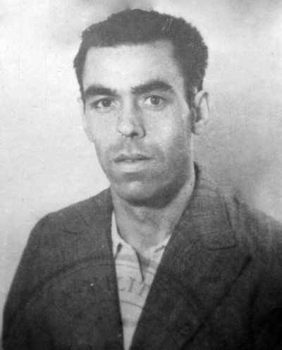Pero mientras tanto en las proximidades de Los Isidros se estaban produciendo algunos movimientos contraguerrilleros de interés, que a falta de una mayor precisión temporal, incluso podrían rastrearse sus inicios en los días previos a la muerte de Nuévalos, aunque su alcance significativo, o mejor dicho, su desenlace activo, tendrá lugar en los meses finales del año. Me refiero a la creación del grupo de “El Mejicano”.
Desconocemos cómo se fraguó este grupo, y hasta quién es en realidad Fernando Rodríguez Serena “El Mejicano” y cómo se contactó con él. Sus datos sucintos nos lo señalan como natural de Madrid, 1912. Reside en Valencia. Hijo de Fernando y Carmen, 34 años, casado, vive en el Grao, calle Toneleros, 2. Había estado en la cárcel de San Miguel de los Reyes tras la Guerra Civil por auxilio a la rebelión. Cuando finalizó la guerra fue hecho prisionero en el frente de Castellón. Juzgado en Zaragoza fue condenado a 30 años. Desde San Miguel de los Reyes sería puesto en libertad condicional el 31 de julio de 1943. El último intento de detención del mismo sería a principios de 1947 en la calle de La Carda de Valencia, pero tras un intenso tiroteo con la policía lograría escaparse y desaparecer. Su grupo de atracadores tendrá una vida intensa y al tiempo efímera, o dicho de otro modo, cortada de raíz en su final, como si alguien quisiera que su actividad y testimonio no se les fuese de las manos. Su propio jefe desaparecerá al poco sin dejar rastro alguno, seguramente exiliándose en Francia o cambiando de nombre y viviendo en Madrid, que es la pista que seguirá infructuosamente la policía durante bastante tiempo. Su partida la componen Ángel Gallego Pérez, Roberto López Gallego, Julián Martínez Martínez, Francisco Pardo Rodríguez, Dionisio Pardo Rodríguez, Basilio Sanz Lozano y Juan Sanz Lozano, todos ellos naturales de Villalpardo y de Los Isidros. Pero también sabemos que se le propuso su ingreso a otro vecino de Los Cojos, de la familia de los “Huecos”, quien será quien alerte a “Peñaranda” de lo que se está tramando una vez rechace su incorporación a esta formación.
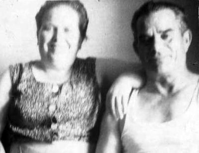
Es una mera teoría lo que sigue, y por ello como simple especulación podría tomarse la explicación que a fecha de hoy se me ocurre de este primer intento de infiltración guerrillera, de los que hubo varios y muy significativos. Pudiera ser que todo estuviera relacionado con la figura del vecino de Los Isidros, Rufino Martínez López, con su sabida relación con las altas autoridades de Valencia, con el logro de traerse a su sobrino Donato Gallego de la cárcel de Barcelona, la ayuda para librar del servicio militar a un cuñado o con la recogida de información de la presencia de los guerrilleros en Ginesitos. De hecho, la mañana del 25 de abril, las autoridades ya conocen que Félix Requena ha ido a entrevistarse con los guerrilleros, pues Robustiana “La viuda” y su hija (casada con Eusebio Cuéllar, quien había regresado desde Francia al poco de finalizar la guerra) han estado en Los Cojos y al ver a la mujer de Requena le han preguntado por su marido, respondiéndoles que ha salido al campo. Desconozco la relación entre Rufino Martínez, de quien nos dicen que por estas fechas guardaba armamento importante en su casa, y la presencia de Roberto Nuévalos en la zona el día de las trágicos sucesos, como también si el empecinamiento de las autoridades judiciales en culpar a Juan José Ruiz tiene algo que ver con el propósito de no alertar a los guerrilleros en esos momentos, para de esta manera ultimar la composición del grupo y ponerlo en acción contra ellos. Con todo, si hay algo de verdad en esta hipótesis, su proyecto se vería trastocado por el hecho imprevisto de la muerte de Nuévalos y por el desconocimiento por parte de las autoridades que, en estos instantes, los hermanos “Peñaranda” y “Canuto” se hallan en guerrillas, y ya saben lo que se está tramando.
Es por ello que el grupo se dejaría ver, bien armado, ya no en Ginesitos sino en otros parajes tanto de la comarca de Requena como de la de Chera. Con todo, su acción más sonada tuvo lugar precisamente en Villalpardo. Pero antes, en el mes de septiembre la guerrilla ahora ya reestructurada en sectores y unidades tras la creación oficial de la AGL en el mes de agosto, como comentamos en su momento, y tampoco es cuestión de repetirse, el día 6 de septiembre intentarían el asalto del cuartel de Los Isidros, y el 26 del mismo mes realizaría un control de carreteras en la Cuesta de la Hosta. En ambas acciones estaba “Jalisco”, pero la partida ya había cambiado, y ahora era José Manuel Montorio “Chaval” el jefe militar de ambas operaciones.
El asalto al cuartel no tenía más finalidad que la de atraer fuerzas hacia esta comarca y despejar un tanto la presión sobre el 11º Sector en el entorno del Turia. Se produjo a las 11,15 de la noche. En él participó el grupo de “Chaval”, pues la otra unidad se hallaba por el término de Casas de Moya. Iban, además de sus dos jefes “Chaval” y “Jalisco”: “Bienvenido”, “Flores”, “La Llave”, “Pepín”, “Fernando el Pecas”, “Julio” y “Ventura”. Se utilizó para ello el parco armamento del que se disponía, varios fusiles ametralladores, con poca munición, apenas unas dos ráfagas, una bomba de mano que no llegó a explotar y algún disparo de pistola. Dentro del edificio tan sólo había dos guardias en esos momentos: Máximo Pérez Chelva y Francisco Morey Trobat, quienes por espacio de unos cinco minutos repelieron la agresión. Al poco el grupo se retiró por la carretera de Casas Ibáñez y sobre la marcha intentó conseguir víveres en la posada de Saturnino Martínez Martínez a unos trescientos metros del pueblo. Pero cuanto apenas habían golpeado la puerta, cerrada a cal y canto, y con su posadero dentro, se tropezaron, un cuarto de hora más tarde de la acción del cuartel, a las 11,30, con un camión Chebrolet, en el puente de la rambla de Albosa que procedente de Villamalea llevaba al mercado de Valencia fruta, huevos y algunas gallinas. Intentaron detenerlo para ver qué transportaba y poder suministrarse ante la imposibilidad de hacerlo en la posada. Los ocupantes del camión no obedecieron las órdenes de los guerrilleros y fue tiroteada la cabina por “Fernando el Pecas” resultando su conductor Antonio Parreño Sotos herido en la mano izquierda y su acompañante José Gómez Descalzo de más gravedad en el pecho, e ilesos uno de los ocupantes de la parte posterior, el soldado Demetrio López, vecino de Villamalea, destinado en Zaragoza, y otro vecino, el joven Juan Antonio Hernández Guijarro. Los heridos serían curados por el médico Pedro García García.
El mismo grupo de “Chaval”, tras su poca efectiva presencia en Los Isidros, y la consiguiente pérdida de los enlaces de la zona, reaparecerá el día 26 de septiembre en la carretera de Requena a Casas Ibáñez, en el paraje denominado Bajada del Cerro de la Hosta. Pero para entonces su relación con los primeros enlaces de la zona ya se estaba perdiendo. Continuaron no obstante activos hasta 1948 los de la Casa del Valiente, los de la Casa del Moral, La Pesquera y los nuevos conseguidos en Iniesta. Una de las últimas caídas en la comarca afectará entre otros a Basilio Lozano Pardo (Csas de Cuadra, Josefa Ponce García, Leonardo González Cebrián, Constantino y Elisa López Martínez y Francisco Pardo Rodríguez “Machín” sobre el día 5 de febrero se 1947. En la Bajada de la Hosta tendrán que recurrir para abastecerse, tras haber paralizado el intento de robar un banco en Requena por la nula infraestructura de que se disponía, a una de las acciones constantes, la de realizar un control de carretera parando a tres camiones, varios carros y algunos ciclistas que volvían de las ferias, requisando el dinero que llevaban sus ocupantes. Los que participan son “Chaval”, “Pepín”, “Tarzán El Pecas”, “Flores”, “Salvador” y “Jalisco”. Otros tres se habían quedado a cargo del campamento. Precisamente esta operación económica tendrá dos detalles significativos, el primero que en la misma detuvieron al antiguo componente del grupo de “Jalisco”, a Donato Gallego, quien una vez reconocido se niega a reincorporarse a guerrillas; y el segundo que es una de las primeras ocasiones en las que el apodo de “Jalisco” empieza a ser popularizado por toda la comarca, al avisarle “Chaval”, llamándole con dicho nombre, para que evitase que los retenidos se pusieran a su espalda.
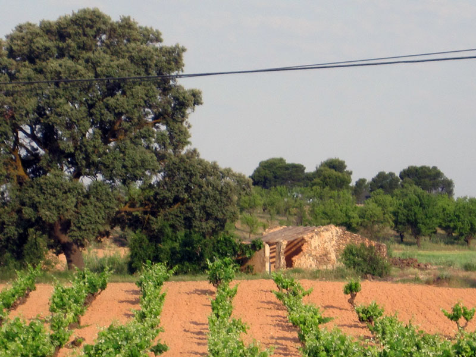 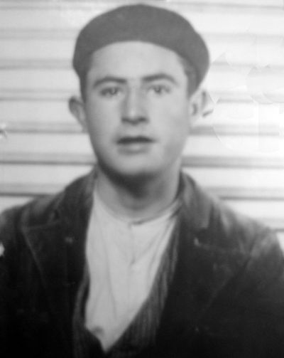
Pero ya por esas fechas, hacia el 17 de septiembre, sería detenida toda una pléyade de personas relacionadas con el corpus de izquierdas, comenzando por la de el pastor de Los Isidros Juan Sanz Valiente, que llevaría a la caída de Cipriano Pardo Rodríguez, Gerardo Lozano Descalzo “Matacán” (barbero que cortaría el pelo a los guerrilleros en las proximidades del cementerio), Esteban Descalzo Jiménez, Evaristo Cárcel González, José Ruiz Gómez, Gregorio García Jiménez, Juan Robledo Cuéllar, Justo Cuéllar Alcocer, Feliciano Lozano Haya (Los Cojos), Marcos Haya Laguna, Florencio Monteagudo Jiménez, Victoriano Sanz Pérez, Evaristo Cárcel González, Vicente Cárcel Haba, Francisco Martínez Valle “Pedorno”, y Victoriano Martínez Valle “Pedorno” (naturales de Enguídanos). Antonio García Jiménez, al igual que Longinos, había huido en este caso antes de ser apresado.
Todavía y antes de la reaparición del grupo del “Mejicano”, hemos de hacer constar, y así quedó ya narrado en mi libro de referencia la presencia de otro de los nuevos grupos guerrilleros que en esta segunda mitad de 1946 actúan en el comarca de Requena-Utiel, y sin alejarnos muchos del centro temático, que seguramente no operativo de la propia guerrilla como son Los Isidros, me refiero a los sucesos del 18 de octubre en la aldea de Las Monjas. El relato ya lo hice en su momento. Sucintamente, el grupo de “Luis” (Armando Fuster Furió) tomaría el pueblo. En esta ocasión iba con ellos el jefe del Sector “Tomás”. Era una de las clásicas acciones de entrada en una pequeña población, requisa de alimentos, armas y dinero en el ayuntamiento y casas significadas políticamente, como la del alcalde pedáneo Francisco Pérez Monteagudo, mitin y abandono rápido, al anochecer. Pero a la postre hubo dos muertes. La de un tío del alcalde, Gregorio Monteagudo Moya, por disparos de “Tomás”, y la del guerrillero “Julio” en el dispositivo de retirada. A lo ya contado, basado en testimonios escritos del ámbito judicial, sumamos ahora algunos recuerdos orales. Los guerrilleros habían sido vistos en unos campos próximos al pueblo por unas mujeres que volvían de faenas del campo. Inmediatamente y casi al tiempo del despliegue guerrillero avisaron al alcalde, quien huyó de inmediato. Durante el operativo se fue deteniendo a todos los vecinos que se encontraban por la calle, y entre ellos al tío del alcalde quien alertado asimismo con la llegada de los 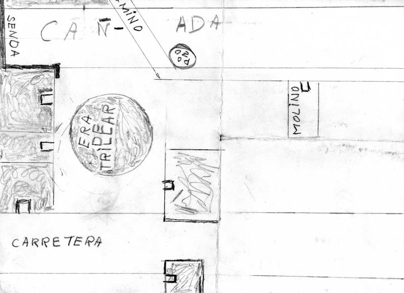guerrilleros salía con una escopeta animando a los cazadores para que les hicieran frente. Lógicamente “Tomás”, una vez retenido el tío del alcalde le retiraría la escopeta y le pediría 20.000 pesetas por su acción, y por la huida del alcalde. El tío del alcalde se negó rotundamente a pagarlas. Su actitud, y su forma de ser, le hacían significarse como alguien que no se arrugaba ante nada. Se comenta que incluso intentó morder a algún guerrillero. Acto seguido “Tomás” le disparó un tiro en la nuca. Inmediatamente los guerrilleros abandonaron el pueblo, pero hubo una confusión pues la contraseña de retirada consistía precisamente en disparar un tiro al aire y tras el efectuado en la muerte de Gregorio Monteagudo no se dio y los guerrilleros “Julio” y “Gerardo”, que vigilaban uno de los caminos de entrada al pueblo, se quedaron esperando la señal correcta. En este intervalo la Guardia Civil de Venta del Moro ya había sido alertada por el alcalde, seguramente desde alguna casa próxima que dispusiera de medio de comunicación, como la de Garrido. Inmediatamente salió una dotación al mando del sargento Aureliano Recio Tristán. Pero en el pueblo ya no encontraron a los guerrilleros, por lo que el sargento ordenó al cabo Pedro Paredes Rebollo y al guardia José González Moreno que regresaran al cuartel no fuera a ser que se presentaran allí los maquis. En el camino de vuelta, que efectuaron por la salida en la que se encontraban los dos guerrilleros citados, y en vehículo distinto del que habían venido, utilizando ahora un automóvil conducido por el chófer de la condesa de Villamar, aunque los testigos orales dan otra versión de los vehículos utilizados, se encontraron a unos 200 metros del pueblo con que “Julio” en mitad de la carretera y armado de metralleta y pistola, que la GC recogería posteriormente, apuntó a los ocupantes del vehículo dando la voz de ¡”Alto!” varias veces. Fue el guardia Paredes Rebollo quien le dijo que quién era él para dar la voz de alto, contestando: “¡Los guerrilleros de Levante!”. La respuesta fue a base de disparos por los dos civiles que hirieron de muerte en la cabeza a “Julio”, cayendo al suelo en el acto, en tanto que “Gerardo” podría huir.
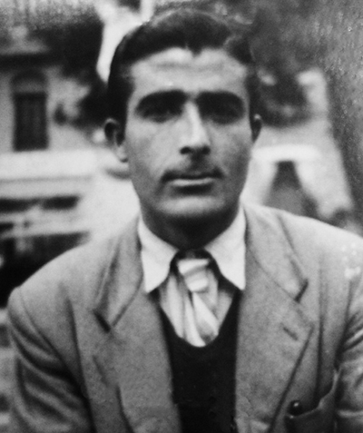Como ya anunciamos, el grupo del “Mejicano” no llegó a actuar en Ginesitos, pero sí que se había dejado ver, bien armado, por diversos parajes guerrilleros, y hasta entre los del monte se comentó que iban unos 25, bien armados y vestidos. Es, con todo, en el final de noviembre cuando reaparecen públicamente en Villalpardo. Hasta aquí se trasladan desde Valencia utilizando el tren desde Aldaya hasta Utiel, y desde esta localidad en un camión nada menos que oficial hasta Minglanilla, para posteriormente, tras comer en una cantina, andando campo a través hasta llegar el 29 de noviembre de anochecida al pueblo de Villalpardo, como vemos un comportamiento público demasiado extraño. Su primera intención fue la de robar al recaudador de contribuciones, objetivo recurrente tanto en el monte como entre la delincuencia común, pero al no hallarlo pensaron que algo podrían sacarle a algún vecino y el elegido fue Heliodoro de las Heras, aunque hay quien piensa que este era el objetivo primero, en su simulacro de maquis. Roberto López, el “Mejicano” y Dionisio Pardo “Chingadito” fueron los que se aproximaron hasta su casa y tuvieron un encuentro con él. “Mejicano” le dispararía hiriéndole de gravedad en la pierna y en la mano derecha. Toda la partida abandonó el lugar inmediatamente sin intentar ultimar su propósito de robo. En su huida utilizaron la ruta de Vadocañas por donde atravesaron el río Cabriel, y de vuelta, el día 30, se toparon con varios vecinos de Venta del Moro, en el lugar conocido como Monte Rubiana, a los que asaltaron y les quitaron algo más de 10.000 pts. de las que el “Mejicano” repartió mil para cada uno de su banda. Los vecinos afectados de Venta del Moro fueron: Félix García López y Eduardo López Murciano; de Villargordo del Cabriel: Ángel García López, Enrique Sánchez García, Vicente García Ballesteros, Salvador Guaita Martínez, Fernando Márquez Devez, José Martínez Alcalá, José Dejoz García, Pedro Guaita Martínez, Aniceto Nuévalos García, Aniceto Carsí Defoz.
Tras esta acción, de la que la guerrilla tuvo pronto conocimiento, parte del grupo del “Mejicano”, a finales de noviembre, intentarán incorporarse a la AGL, más por móviles económicos que políticos. Valencia había sido su refugio, alguno de sus componentes se había quedado en la aldea de Los Cojos donde residía su familia, otros se alejan por un corto periodo de su disciplina y buscan trabajo en las obras de un canal de agua que se construye en Villamarchante (Ángel Gallego y su primo Roberto López Gallego). Seguramente estaban convencidos, los que aceptan integrase en guerrillas, de que el botín de sus atracos será más beneficioso que el que ellos estaban consiguiendo por iniciativa propia.
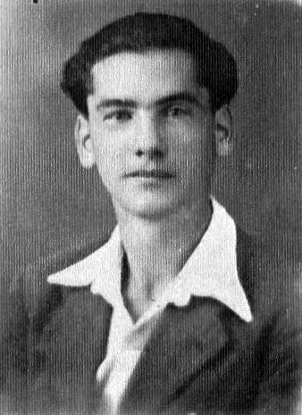 Los intentos para unirse al maquis se dan también en casa de Julián Martínez, al margen del PC, unas semanas más tarde de la acción de Villalpardo. Allí coinciden de nuevo el “Mejicano”, Juan Sanz Lozano que ya ha vuelto de Los Cojos, “Chingadito” y el enlace de La Pesquera, Victoriano Monleón. Entre ellos surgirá la idea de integrarse en la guerrilla, para lo que utilizan los contactos de Monleón que acompaña a los tres citados, el “Mejicano”, “Chingadito” y Sanz Lozano, hasta Requena, y desde donde de madrugada otro enlace los lleva hasta la Casa del Llano, y desde allí un pastor de dicho caserío hasta una cueva en el término de Hortunas. Enclave en el que por estas fechas el 5º Sector tenía uno de sus campamentos, el de “Chaval”, otro estaba en Cuevas Blancas, hacia la Fonseca. Desde Hortunas, el 5º Sector mandará realizar una operación económica donde se ponga a prueba a los recién incorporados. Dos de ellos, “Chingadito” y el “Mejicano” participarán al poco en lo dispuesto en Requena. Será el día 10 de diciembre, conjuntamente con “Baúl” y “Segundo” y “Chaval” a cuyo mando se efectuó la operación económica con la información facilitada por el enlace “Roberto”. Pero antes, por haberse presentado el “Mejicano” en el campamento haciéndose pasar por “Capitán” a quien “Chaval” conocía bien del 11º Sector, y dudando del recién incorporado, el propio “Chaval” envió a “Jalisco” y a “Ventura” hasta el campamento de Las Hoces donde se encontraba “Tomás” para saber qué sabía de este curioso personaje.
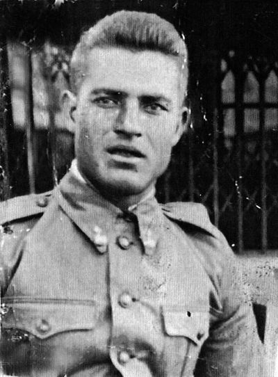Previa a esta incorporación, “El Mejicano” había tenido en Valencia una entrevista tanto con “Tomás” como con “Andrés”. En sus conversaciones con “Andrés” le indicó que lo que realmente quería era documentación, que se encontraba perseguido, y que de su grupo en este momento sólo tenía contacto con dos componentes. Un mes más tarde, tras el enfrentamiento en la cueva de Hortunas el 10 de diciembre en el que fallecería “Bienvenido”, el hermano de “Jalisco” con sospechas de que el tiro se lo había dado al huir y por la espalda el propio “Mejicano”, tanto éste como uno de sus acompañantes abandonarían la guerrilla y se ocultarían a Valencia. Pero aún de nuevo intentarán ponerse en contacto con el Estado Mayor del 5º Sector. Al menos hacia el 22 de enero, cuando ya se ha hecho cargo del mismo “Rodolfo” y estando en el campamento de la 2º Compañía, seguramente en La Olmedilla, a “Rodolfo” le comunica “Fernando el Pecas” que “El Mejicano” se encuentra en la zona del 5º buscando una cita con él, y que le acompaña un grupo de guerrilleros, vestidos con pana y con buen armamento en número de 25. Lo cierto es que en ese final de enero ya sólo Dionisio Pardo “Chingadito” permanece en guerrillas hasta su deserción unos meses más tarde, y su muerte en un enfrentamiento con la policía en el puente de Campanar (20-10-47) no deja de ser también sospechosa. El resto del grupo sería detenido el 4 de febrero de 1947, sin mayores problemas, y conducidos a Carabanchel. Tras su juicio serían condenados a muerte y fusilados en 1949 Basilio Sanz, Juan Sanz, Ángel Gallego, Roberto López, Julián Martínez, Francisco Pardo
La incidencia de la guerrilla en Los Isidros, entendido este lugar en su sentido más amplio, a la vez que preciso en tiempo y espacio, había sido intensa y dura, acumulada sobre todo en 1946. Con todo, el año 1947, en toda la comarca de Requena-Utiel, no ofrecerá mejores perspectivas ni respiros. Tanto los simpatizantes comunistas o los libertarios, tengan o no relación con la guerrilla serán detenidos en número considerable, y un buen estudio sobre toda su geografía humana de compromiso político, que creo que está en ciernes, es de agradecer. No por casualidad, tras cada acción guerrillera la represión se incrementará, aun cuando los focos más activos haya que ubicarlos en el entorno de Las Hoces del Cabriel, en Cofrentes durante muchos años, o en el curso del río Turia. Tampoco el espacio de las aldeas de Contreras quedará impune. En la identidad de la creación, o sencillamente, recuperación democrática no puede faltar el sentido de reconocimiento a todos aquellos que por necesidad o convicción no se doblegaron. La dosis de narratividad, en tiempos, personas y hechos, no debe nublar el horizonte de su causa. No es una crítica al estar, ni al consenso ni a la connivencia con el franquismo más censor y represivo, esa es una valoración política, que aquí tampoco se descarta, pero ahora tan solo ahondamos en lo humano y en lo histórico, en las raíces sociales de la convivencia, para que no se olviden los apellidos del pasado.
Descarga Número 1 en PDF
Este texto se nutre de las investigaciones para la escritura de mi libro Los guerrilleros de Levante y Aragón. Fueron muchos y largos años de tarea y aprecio. Pero para completarlo sobretodo quisiera tener presentes a quienes se ocupan del con detalle y profesionalidad del archivo intermedio de Defensa de Valencia, a Pascual Llopis, a la librería Primado, a la familia de Juan José Ruiz, y sobre todo a Ginés García, con el más sentido recuerdo de la ilusión, lo que él a su edad encarnaba, y así me trasmitió.
Archivo de Defensa, Madrid
Archivo Intermedio del Ejército, Valencia
Archivo del Centro Penitenciario, Picassent
Entrevista con Ginés García García (Valencia, 28/5/2010)
José Manuel Montorio Gonzalvo: Cordillera Ibérica. Recuerdos y olvidos de un guerrillero, Gobierno de Aragón, Huesca, 2007.
Salvador F. Cava: Los guerrilleros de Levante y Aragón (2 tomos), Tomebamba Ediciones, Cuenca, 2007-2008
(Fuente: AIMV) Jalisco ,Tomás, Chato, Bárbara y Candela, Basiliso, Requena, Cuéllar, Lozano, Salinas, Mejicano, Pardo y Sanz.
(Fuente: Archivo familiar) para Fulgencio
(Fuente: Ginés García) para los planos,Canuto y su mujer
(Fuente: AHPCE) para Donato Gallego
(Fuente: JM Montorio) para Chaval
(Fuente: AJMV) para Bienvenido
(Fuente: AHCPP) para Juan Ruiz Pardo, y Crisanto
(Fuente: Salvador F. Cava) para los paisajes